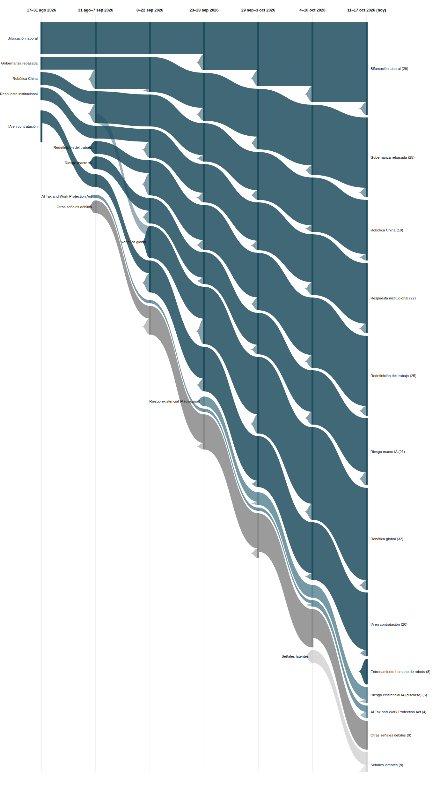

|
Vigilancia Tecnológica Competitiva
Señales del cambio
Semana 7 · 19 de octubre de 2026
Nace una novena señal macro en una sola edición — la economía del entrenamiento humano de robots —, mientras el FMI y el Banco Mundial advierten juntos de un "tsunami" de IA y siete señales débiles del registro quedan ya en estado latente.
|
Resumen ejecutivo
162 observaciones nuevas procesadas entre el 11 y el 17 de octubre (la base histórica no registró observaciones adicionales en el periodo). Por volumen, esta edición prioriza ~37 observaciones de mayor relevancia estratégica. El registro de señales se mantiene en 23, pero cambia de composición: 9 fuertes (nace una nueva, promovida desde señal débil), 7 débiles con potencial de escalar, 3 débiles activas sin tendencia alcista por ahora, y 7 señales en estado latente — tres más que la semana pasada.
Los tres movimientos más relevantes de la semana:
- Se promueve a señal macro propia la economía del entrenamiento humano de robots: en una sola edición acumula evidencia de China (hasta 900 dólares al mes por repetir tareas domésticas 200 veces al día), Europa, India y cobertura global.
- El FMI y el Banco Mundial, reunidos en Bangkok, pasan de debatir si la IA golpeará el empleo a advertir juntos de un "tsunami" que podría afectar hasta el 40% de los empleos globales — mientras Amazon supera el millón de robots desplegados y Kroger anuncia el recorte de 3.000 puestos corporativos citando IA.
- Delaware se convierte en el segundo estado de EE.UU. (tras California) en imponer reglas específicas sobre IA y perfilado automatizado a empleadores, confirmando el patrón de réplica estatal que se anticipaba.
|
|
Principales insights
5. Siete señales débiles ya en estado latente — más de la mitad de la familia débil del registro.
OpenAI Jobs Platform, el "impuesto del discernimiento" y la ordenanza de San Mateo se suman esta semana a OpenExecutive, la plataforma china de IA encarnada, el centro NSF de coadaptación y la predicción de Musk como señales latentes. En paralelo, Anthropic publica su tercer informe interno documentando cómo cambia el empleo dentro de su propia empresa al desplegar IA en sus procesos.
Implicación: el registro empieza a mostrar con claridad que la mayoría de señales débiles no maduran en macro — la atención se concentra en unas pocas (esta edición, la economía del entrenamiento de robots) mientras el resto se diluye con el tiempo.
|
|
Señales de la semana
|
|
Gráfico de evolución
Flujo de las 9 señales macro y las dos señales débiles más notorias, a lo largo de siete periodos. El grosor de cada banda es proporcional al número de evidencias que la respaldan. La banda de señales latentes (gris claro) sigue creciendo esta edición.

|
|
Descripción textual del gráfico (por si no se renderiza la imagen): De izquierda a derecha, siete columnas temporales desde 17–31 ago 2026 hasta 11–17 oct 2026 (hoy). Las nueve señales macro llegan a la última columna con anchos distintos según su evidencia acumulada: Robótica global sigue siendo la más gruesa (32), seguida de Bifurcación laboral (29), Gobernanza rebasada y Redefinición del trabajo (25 cada una), Respuesta institucional (22), Riesgo macro IA (21), IA en contratación (20), Robótica China (19), y la recién nacida Entrenamiento humano de robots, que entra directamente con 8 evidencias — comparable al nacimiento de Robótica global hace tres ediciones. De las señales débiles, se muestran como bandas propias las dos con más evidencia: escalada del discurso de riesgo existencial de la IA (5) y AI Tax and Work Protection Act (4, reactivada tras escalar la semana pasada). La banda de señales latentes crece de 4 a 7 (gris más claro), y la de señales débiles activas se reduce a la misma proporción. Ninguna señal ha llegado todavía a estado "muerta".
|
|
Señales a tener en cuenta
- AI Tax and Work Protection Act. El debate sobre gravar la IA/los robots se internacionaliza: Bill Gates en CNN, y en el Reino Unido se plantea al ministro John Healey gravar robots para financiar apoyos a la "generación perdida" de jóvenes.
- "Shadow AI": empleados ocultan su uso de IA por miedo a parecer menos capaces. Fenómeno inverso a la "IA performativa" (que fingía más uso, no menos) — ambos comparten la misma ansiedad de fondo sobre cómo se percibe el uso de IA en el trabajo.
- OpenAI Jobs Platform, el "impuesto del discernimiento" y la ordenanza de San Mateo. Pasan a estado latente esta semana tras cuatro ediciones sin evidencia nueva propia, sumándose a OpenExecutive, la plataforma china de IA encarnada, el centro NSF de coadaptación y la predicción de Musk.
- Disidencia interna en labs de IA y cuántica como frontera de política laboral. Llevan ya tres ediciones sin evidencia nueva — a una edición del umbral de señal latente si no reaparecen la próxima semana.
|
|
Movimientos del histórico
Se promovió a macro: la economía del entrenamiento humano de robots pasa de señal débil (nacida la semana pasada) a señal macro Fuerte, por el mismo criterio de volumen y diversidad que dio origen a Robótica global.
Escaló: AI Tax and Work Protection Act suma dos evidencias nuevas (Reino Unido, Bill Gates) y confirma su escalada a Débil↑ de la semana pasada.
Latentes esta semana: OpenAI Jobs Platform, el "impuesto del discernimiento" y la ordenanza de San Mateo, tras cuatro ediciones sin evidencia nueva — el registro llega a 7 señales latentes, más de la mitad de su familia de señales débiles. Ninguna señal ha llegado todavía al umbral de "muerta" (8 ediciones).
|
|
Cierre
Pregunta abierta: esta semana el FMI y el Banco Mundial coincidieron en calificar el impacto de la IA en el empleo como un "tsunami" que exige medidas "de era de crisis", mientras en paralelo surge toda una economía de personas contratadas específicamente para generar los datos que entrenan a los robots que podrían sustituirlas. Si tu organización depende de trabajo manual o repetitivo en cualquier punto de su cadena, propia o subcontratada: ¿sabes ya si alguno de esos puestos podría convertirse, sin que nadie lo decida explícitamente, en una fuente de datos de entrenamiento para su propio reemplazo?
Metodología: cada señal es trazable a observaciones concretas en la base de vigilancia. Una señal pasa a "latente" tras 4 ediciones sin evidencia nueva, y a "muerta" tras 8; ninguna del registro actual ha cruzado el segundo umbral todavía.
|
|